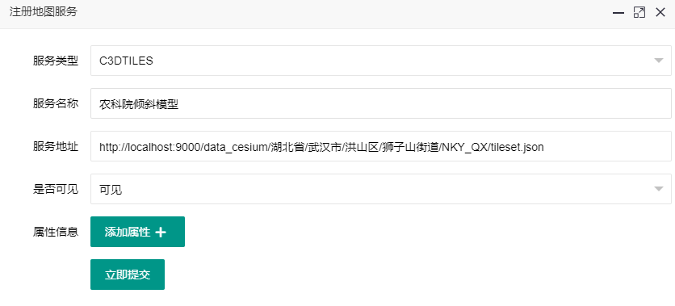
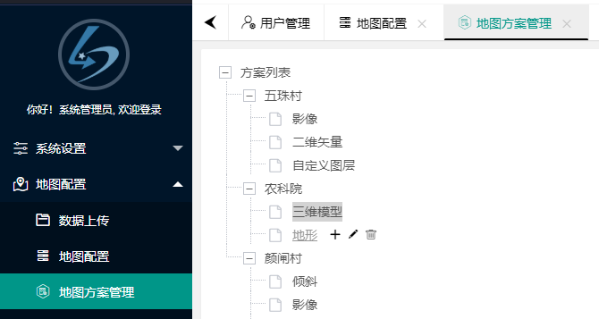

<!DOCTYPE html>
<html lang="en">

<head>
    <meta charset="UTF-8">
    <title>地图配置</title>
    <link rel="stylesheet" href="../../../../lib/ok_admin/css/okadmin.css">
    <script type="text/javascript" src="../../../../lib/ok_admin/lib/layui/layui.js"></script>
    <style>
    </style>
</head>

<body>
    <div class="layui-body commonOutCss" style="left: 0">
        <div>
            <table class="layui-hide" id="maplist" lay-filter="maplist"></table>
        </div>
    </div>
    <script type="text/html" id="toolbar">
        <form class="layui-form layui-col-md12">
            <div class="layui-input-inline ok-search">
                <input class="layui-input" placeholder="请输入名称" autocomplete="off" name="serverName">
            </div>
            <button class="layui-btn introSearch" lay-submit="" lay-filter="search" title="条件查询">
                <i class="layui-icon">&#xe615;</i>
            </button>
            <button class="layui-btn" id="add" title="注册地图服务">
                注册地图服务
                <i class="layui-icon">&#58964;</i>
            </button>
            <button class="layui-btn" id="addBatch" title="批量注册地图服务">
                批量注册地图服务
                <i class="layui-icon">&#58964;</i>
            </button>
            <button class="layui-btn" id="intro" title="教程引导">
                教程引导
            </button>
        </form>
</script>
    <script>
        var $;
var parentFlag = 0;
    layui.use(['tree', 'form', 'table', 'okUtils', "okLayer", 'constantUrl', 'zTable','introJs','zDataGrid'], function () {
        $ = layui.jquery;
        var tree = layui.tree;
        var okUtils = layui.okUtils;
        var constantUrl = layui.constantUrl;
        var okLayer = layui.okLayer;
        var form = layui.form;

        var zTable = layui.zTable({
            elem: '#maplist'
            , page: true //是否显示分页
            , limit: 10 //每页默认显示的数量
            , url: constantUrl.stMap.queryMapConfigs
            , parseData: function (res) { //res 即为原始返回的数据
               if(!res.data){
                return {
                    "code": res.meow, //解析接口状态
                    "msg": "无数据", //解析提示文本
                    "count": 0, //解析数据长度
                    "data": []//解析数据列表
                   };
                }

                var result =  res.data.getMe;
                return {
                    "code": res.meow, //解析接口状态
                    "msg": res.data.msg, //解析提示文本
                    "count": res.data.total, //解析数据长度
                    "data": result //解析数据列表
                };
            }
            , height: 'full-40'
            ,toolbar:'#toolbar'
            , cols: [[ //标题栏
                {field: 'serverName', title: '名称'}
                , {field: 'url', title: '地图服务地址'}
                 , {field: 'type', title: '服务类型'}
                // , {field: 'visiable', title: '是否可见',templet:'#statusTpl'}
                  , {field: 'createtime', title: '添加时间'}
                , {title: "操作", width: 300, align: "center", templet: "#operationTpl"}
            ]]
        });

        var myTable = zTable.getTable();
        initIntro();

        form.on("submit(search)", function (data) {
            var param = {};
            param.serverName = data.field.serverName;
            myTable.reload({
                url: constantUrl.stMap.queryMapConfigs,
                where: param,
                page: {curr: 1}
            });
            return false;
        });

        zTable.getLayuiTable().on("tool(maplist)", function (obj) {
            var data = obj.data;
            switch (obj.event) {
                case "btnEdit":
                parentFlag = 0;
                    btnEdit(data);
                    break;
                case "btnDel":
                parentFlag = 0;
                    btnDel(data);
                    break;
            }
        });

        $('#add').click(function () {
            okLayer.open("注册地图服务", "mapAdd.html", "50%", "48%", function (layero) {
                var iframeWin = window[layero.find("iframe")[0]["name"]];
                iframeWin.initForm(null);
            }, function () {
                if(parentFlag == 1){
                     myTable.reload();
                     bindClick();
                }

            });
            return false;
        });

        $('#addBatch').click(function () {
            okLayer.open("批量添加地图服务", "mapAddBatch.html", "90%", "90%", function (layero) {
            }, function () {
                if(parentFlag == 1){
                     myTable.reload();
                     bindClick();
                }
            });
            return false;
        });

        function bindClick() {
            $('#add').click();
            $("#intro").click();
            $("#addBatch").click();
        }

        function btnEdit(data) {
            okLayer.open("编辑信息", "mapAdd.html", "90%", "90%", function (layero) {
                var iframeWin = window[layero.find("iframe")[0]["name"]];
                iframeWin.initForm(data);
            }, function () {
                if (parentFlag === 1) {
                    myTable.reload();
                    $('#add').click();
                      $("#intro").click();
                }
            })
        }

        function btnDel(data) {
            okLayer.confirm("确定要删除吗？", function (index) {
                okUtils.ajax({
                    "url": constantUrl.stMap.delMapConfig,
                    "param": {"id": data.ID, "ststate":0}
                }).done(function (response) {
                    okUtils.table.successMsg("删除成功");
                }).fail(function (error) {
                    console.log(error)
                });
            });
        }
        var intro;
        function initIntro() {
            intro = layui.introJs();
            intro.setOptions({
                steps: [
                    {
                        element: ".introSearch",
                        intro: '<h5>查询</h5><br>' +
                            '1.根据已注册的服务名称查询服务<br>'
                    },
                    {
                        element: "#add",
                        intro: '<h5>服务注册</h5><br>' +
                            '1.运用已有服务URL,将服务注册到系统中<br>' +
                            '2.如图所示,将数据上传中的倾斜模型注册到服务中"<br>',
                        tooltipPosition:'bottom'
                    },
                    {
                        element: "#add",
                        intro: '<h5>方案配置</h5><br>' +
                            '1.服务注册成功后,将该服务挂接到已有地图方案上<br>' +
                            '2.如图所示,"<br>',
                        tooltipPosition:'bottom'
                    },
                ],
                doneLabel: '试一试'
            });
            intro.oncomplete(function () {
                $('#add').click();
            });
            var hasShowIntro = layui.okUtils.getCookie('hasShowIntroMapConfig');
            if(!hasShowIntro){
                intro.start();
                layui.okUtils.setCookie('hasShowIntroMapConfig','hasShowIntroMapConfig');
            }
        }

        $('#intro').off('click').on('click',function () {
            intro.start();
            return false;
        });
    });
</script>
    <script type="text/html" id="operationTpl">
        <div>
        <button class="layui-btn layui-btn-danger layui-btn-xs" lay-event="btnEdit">编辑信息</button>
        <button class="layui-btn layui-btn-danger layui-btn-xs" lay-event="btnDel">删除</button>
        <button class="layui-btn layui-btn-normal layui-btn-xs" lay-event="viewMap">查看地图</button>
    </div>
</script>
    <script type="text/html" id="statusTpl">
        {{#  if(d.visiable == 1){ }}
    <span class="layui-btn layui-btn-normal layui-btn-xs">可见</span>
    {{#  } else if(d.visiable == 0) { }}
    <span class="layui-btn layui-btn-warm layui-btn-xs">不可见</span>
    {{#  } }}
</script>
</body>

</html>
